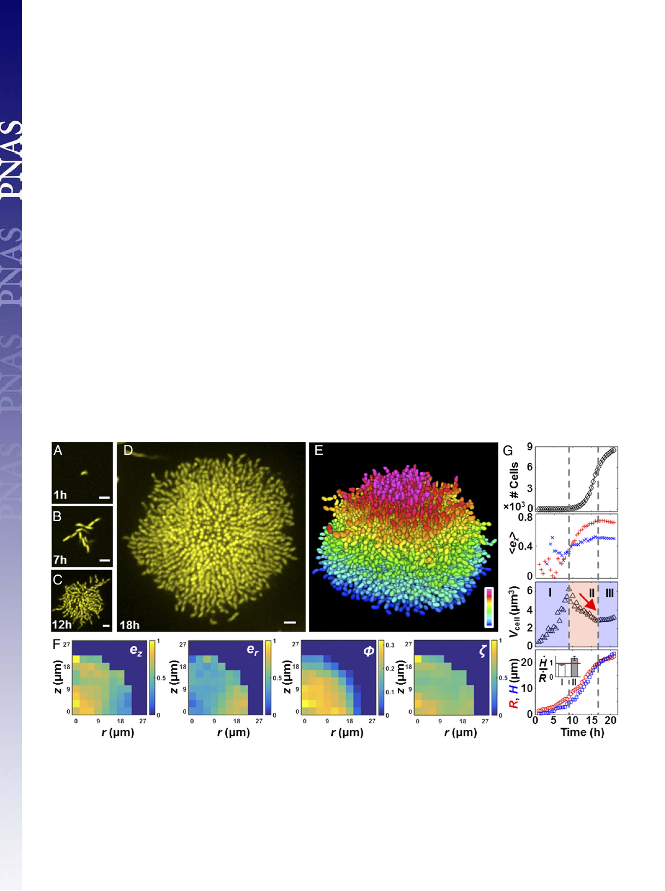

evolutionary advantage of the dense, final architecture versus other
possible architectures.
Results and Discussion
Single-Cell Live Imaging Reveals Ordering. We and others recently
reported single-cell resolution imaging of fixed bacterial biofilm
samples using staining and ensemble averaging (20, 21). Because
these analyses relied on fixed cells, they could not uncover key
temporal information about the biofilm developmental process.
Therefore, our first goal in the present work was to advance the
field by achieving single-cell imaging of living, growing biofilms.
To accomplish this goal, we optimized a customized spinning disk
confocal microscope, integrated the gene encoding the highly
fluorescent and photostable protein mKO as a constitutive re-
porter into the V. cholerae genome (22), and developed an im-
aging procedure using minimum laser exposure and adaptive z
ranges to reduce phototoxicity to the cells and photobleaching of
the chromophores (Materials and Methods). We studied a commonly
used rugose variant (denoted Rg) of V. cholerae that forms robust
biofilms due to increased production of c-di-GMP (23). We
seeded sample chambers at low cell density so that we could
follow the development of isolated biofilm clusters from single
founder cells to 10,000 cells (Fig. 1 A–D and Movies S1 and
S2) at a temporal resolution of one cell-division cycle (≈30 min),
using static 96-well chambers. The raw data show that cell clusters
initially expand radially in a branched pattern primarily in two
dimensions, but subsequently transition into dense 3D domes.
Strikingly, in mature biofilms, the central core harbors cells aligned
side-by-side oriented vertically to the surface, whereas cells at the
periphery align radially and remain horizontal relative to the surface.
To quantify spatial heterogeneity in cell ordering, we decon-
volved the z-stack images and segmented the entire biofilm
cluster into individual cells using semiautomated, home-written
image analysis codes (Fig. 1E and Fig. S1). We define four pa-
rameters (Fig. 1F): ez and er, the z and radial components of each
cell’s orientation director, respectively; ϕ, the volume fraction of
cells in space; and ζ, the cell-to-cell alignment parameter, de-
fined as the absolute value of the cosine of the angle between
neighboring cells, all averaged locally within a given region. The
ϕ plot shows that the cluster has a roughly hemispherical shape
with a dense core. The term ez captures the vertically aligned
central core that begins forming around 14 h after biofilm ini-
tiation (Fig. S2 and Movie S3). By contrast, er shows that the cells
located at the periphery are radially aligned throughout the en-
tirety of biofilm growth. The ζ plot demonstrates that cells at the
center of a mature cluster are aligned parallel to each other,
indicating a high nematic order (24).
To define the global features of a growing biofilm cluster
during development, we plotted four spatially averaged param-
eters versus time (Fig. 1G) for a single cluster. The total cell
number initially increases exponentially, but subsequently slows
before entrance into stationary phase. The growth curve of
biofilm cells is similar to the growth curve of their planktonic
counterparts. The averaged orientation of the cells in the center
of the cluster evolves from a horizontal (hezi = 0) to vertical
orientation (hezi ∼ 0.7) consistent with observations in Fig. 1 A–D.
Vcell, the effective biovolume per cell, characterizes the compact-
ness of the cell cluster and shows three characteristic phases. In
phase I, the steady increase in Vcell captures the 2D branched
growth pattern. In phase II, Vcell decreases, indicating that the
cells proliferate within a confined space in this phase. Notably, this
Fig. 1. Single-cell imaging of a growing V. cholerae biofilm cluster. Cross-sectional images of the bottom cell layer at 1 h (A), 7 h (B), 12 h (C), and 18 h
(D). (Scale bars: 3 μm.) (E) Segmenting the 3D biofilm cluster in D into 7,199 cells, color-coded according to z position (0–21 μm). (F) Spatial distribution of the z
and radial components of each cell’s orientation director ez and er, volume fraction ϕ, and alignment order parameter ζ for the 18-h cluster in E. (G) Time
evolution of cell number, averaged ez, biovolume per cell Vcell, cluster radius R (red circles), and height H (blue squares). In the ez plot, average values from
cells with x–y coordinates that are less and more than R/2 away from the center are shown as red plus signs and blue plus crosses, respectively. We identified
three phases, denoted by the vertical dashed lines. Phase II is characterized by a steady decrease of Vcell (red arrow), an increase in hezi, and faster growth of H
than R. (Inset) Ratio between growth rates of the cluster height H_ and radius R_ in phases I and II averaged over five samples (error bars correspond to SDs); the
red line corresponds to a ratio of 1.
Yan et al.